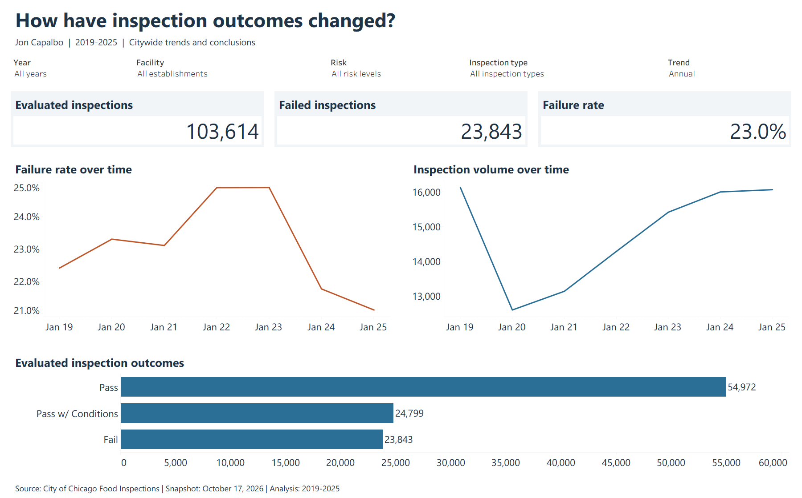
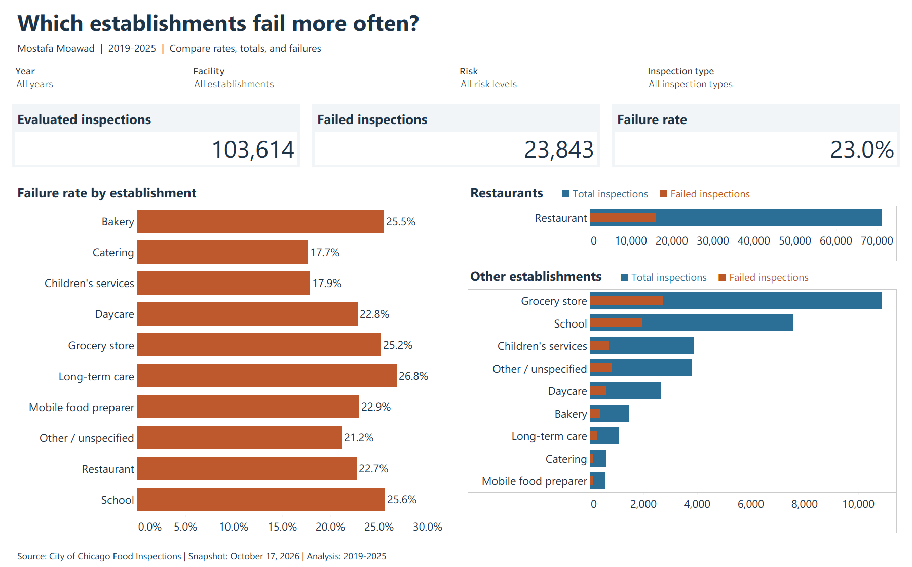
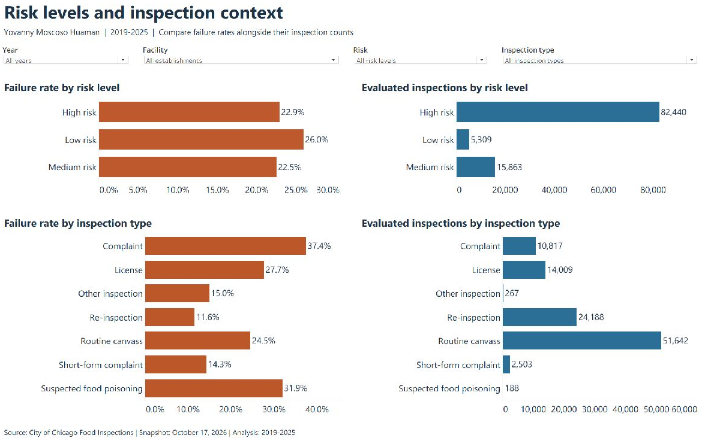
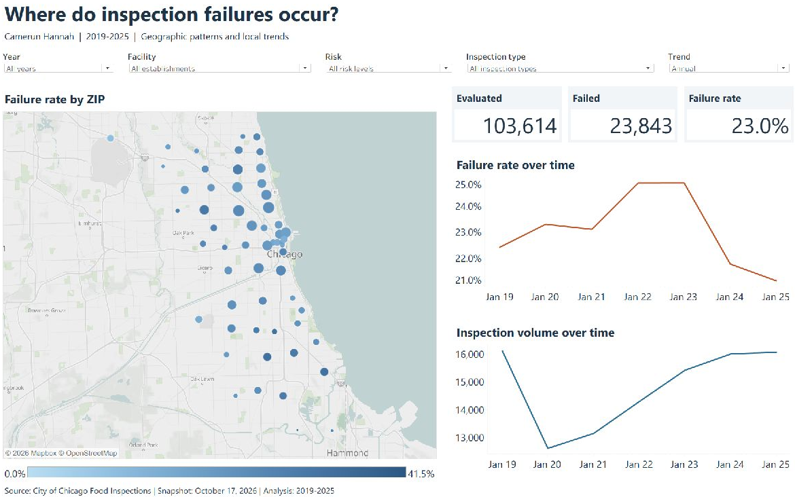

Main finding
The annual failure rate fell from 24.9% to 21.1% between 2023 and 2025.
That is a decline of about 3.8 percentage points among evaluated inspections. The charts describe the records in the dataset; changes in inspection activity and the mix of facilities may affect the comparison.
Across all seven years, 23,843 of 103,614 evaluated inspections failed, giving an overall failure rate of 23.0%.
Evaluated inspections have a Pass, Pass w/ Conditions or Fail result. These counts describe inspection visits, including repeat visits to the same establishment.
Static web summary from the workbook data
Annual inspection failure rates.
Each bar uses the same 0-30% scale. The table provides counts and exact denominators.
This is an HTML summary of the packaged data. Explore the dashboards on Tableau Public, or download the workbook for a compatible Tableau application.
| Year | Evaluated | Failed | Failure rate |
|---|---|---|---|
| 2019 | 16,121 | 3,612 | 22.4% |
| 2020 | 12,600 | 2,935 | 23.3% |
| 2021 | 13,139 | 3,035 | 23.1% |
| 2022 | 14,286 | 3,554 | 24.9% |
| 2023 | 15,413 | 3,835 | 24.9% |
| 2024 | 15,995 | 3,481 | 21.8% |
| 2025 | 16,060 | 3,391 | 21.1% |
| Total | 103,614 | 23,843 | 23.0% |
Dashboard previews
Citywide trends, with context from three more views.
These static previews show all years, facilities, risk levels and inspection types selected. Open a full-size image to read the detail, or use Tableau Public for interactive exploration.

Trends and conclusions · Full-size preview

Establishments · Full-size preview

Risk and inspection type · Full-size preview

Geography · Full-size previewInspection context
Complaint and routine inspections describe different situations.
Complaint inspections had a 37.4% failure rate, compared with 24.5% for routine canvass inspections and 11.6% for re-inspections. The inspection-type filter helps narrow comparisons to a more consistent context.
These observed differences do not establish that inspection type causes an outcome. Complaint inspections, for example, are selected because someone reported a concern.
| Context | Evaluated | Failed | Failure rate |
|---|---|---|---|
| Complaint | 10,817 | 4,048 | 37.4% |
| Routine canvass | 51,642 | 12,659 | 24.5% |
| Re-inspection | 24,188 | 2,797 | 11.6% |
Explore the dashboards
Try a comparison, then inspect a ZIP.
Select Routine canvass in the Inspection type control, then compare facility groups using both failure rates and evaluated counts. This narrows the inspection context; it does not control for every difference between facilities.
In Geography, select a ZIP to inspect its local totals and trends. Clear the selection to restore the broader geography view. The citywide Trends and conclusions dashboard remains independent of that map selection.
- Shared controls
- Year, facility, risk and inspection type narrow records across dashboards. Rates are recalculated from the filtered numerator and denominator. The geography and trends dashboards also provide an annual/monthly control.
With all filters reset for 2019-2025, ZIP 60614 had 893 failures in 3,730 evaluated inspections (23.9%), compared with 542 in 2,793 (19.4%) for ZIP 60640. Facility mix and inspection context may differ, so these figures are starting points for investigation.
Open the four dashboards on Tableau Public and use the tabs to switch views. The fixed-width Tableau canvases work best on a desktop; the previews and findings here reflow for smaller screens.
Source and preparation
Define the denominator before comparing rates.
City of Chicago Food Inspections is the public source. The supplied October 17, 2026 snapshot has 317,175 rows. The workbook retains the 123,673 records dated within 2019-2025, covering seven complete calendar years.
- Failure-rate calculation
- Failed inspections divided by evaluated inspections. Evaluated means Pass, Pass w/ Conditions or Fail. The rate divides summed counts after filtering, rather than averaging group percentages.
- Excluded outcomes
- Out of Business (9,392), No Entry (7,904), Not Ready (2,735) and Business Not Located (28) remain in the packaged source but are excluded from the rate. These outcomes are not passes.
- Category preparation
- Named common facility types are normalized for case and surrounding spaces, daycare variants are combined, and remaining types use Other / unspecified. Inspection groups combine re-inspection variants. Original category fields remain available.
- Validation
- The packaged CSV reconciles to the supplied snapshot's inspection IDs and retained raw fields. No duplicate Inspection IDs were found in the period. Annual, risk and inspection-context totals reconcile with the headline counts.
Interpretation limits
Inspection records count visits, including repeat visits.
- These are inspection rates. Repeat inspections of the same establishment are separate observations. The results do not estimate the probability that a randomly chosen Chicago establishment will fail.
- Inspection scheduling, complaints, licensing and re-inspection requirements affect which establishments appear and how often. Raw category differences do not control for that selection or for changes in composition over time.
- There are 381 evaluated records with missing coordinates. Because the map places ZIP summaries at fixed, full-period mean recorded coordinates, some of these records still contribute to their mapped ZIP. In total, 79 evaluated records cannot be placed by the workbook's ZIP-location rule; headline totals retain them.
- Map circles represent ZIP summaries, rather than individual establishments or official ZIP boundaries. The source also contains inconsistent city and ZIP labels, which are retained rather than silently corrected.
- The risk chart omits the unspecified group, which has only two evaluated inspections; both passed. Other totals retain them. Recorded risk level describes the source classification, not the inspection result.
- Small filtered groups can produce unstable percentages. Comparisons need denominators; the workbook's native time axes and map color range can change with selection. Separate establishment-count panels use separate scales.
A useful follow-up would compare routine inspections within similar facility and risk groups, then investigate repeat visits at the establishment level. The current project reports descriptive patterns and does not claim a public-health intervention or measured business impact.
Downloads
Workbook and validation.
Download the workbook to explore it in a compatible Tableau application. The validation file documents the source totals, calculations and workbook checks.
Contact
Contact Jonathan.
I'm open to business analysis, reporting, operations and business systems opportunities.